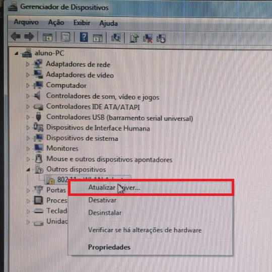

Sem internet
O problema
O computador não se conecta à rede sem fio (Wi-Fi) ou à rede cabeada, ou se conecta mas não acessa nenhum site. Durante o nosso trabalho no laboratório, um dos computadores não mostrava nenhuma rede Wi-Fi: a placa de rede sem fio aparecia no Gerenciador de Dispositivos como "802.11 WLAN Adapter", com um ponto de exclamação amarelo.
Possíveis causas
Driver da placa de rede (o componente que conecta o computador à rede) ausente ou incompatível, Wi-Fi desligado pelo modo avião ou por uma tecla do notebook, problema no roteador, configuração de IP (o endereço do computador na rede) ou de DNS (o serviço que traduz nomes de sites em endereços) errada. No nosso caso, depois de formatar, o Windows não trazia o driver da placa sem fio, que era antiga.

Solução no Windows
Confira se o modo avião está desligado e se outros aparelhos acessam a internet pelo mesmo roteador. Em seguida, abra o Gerenciador de Dispositivos e veja a seção Adaptadores de rede: um dispositivo com ponto de exclamação, ou em Outros dispositivos, está sem driver.
Foi assim que resolvemos: nas Propriedades do dispositivo, aba Detalhes, a opção IDs de hardware mostrou os códigos do fabricante e do modelo, que pesquisamos na internet. Em outro computador, baixamos o driver da Realtek para Windows 7 de 32 bits e passamos por pendrive. No Gerenciador de Dispositivos, clicamos com o botão direito no dispositivo > Atualizar driver > Procurar software de driver no computador e selecionamos a pasta do driver.
Se o driver estiver instalado, use Configurações > Rede e Internet > Configurações de rede avançadas
> Redefinição de rede, ou execute no Prompt de Comando como administrador ipconfig /release,
ipconfig /renew, ipconfig /flushdns e netsh winsock reset.
Solução no Linux
O comando nmcli device mostra as interfaces de rede e se estão conectadas, e
rfkill list mostra se o Wi-Fi está bloqueado (para desbloquear: rfkill unblock
wifi). O comando lspci -k mostra a placa de rede e o driver em uso; se nenhum driver
aparecer, abra Programas e Atualizações > Drivers adicionais, que procura drivers proprietários.
Para testar a conexão, ping 8.8.8.8 verifica se a internet responde; se responder, mas os
sites não abrirem, o problema é de DNS. Reiniciar o serviço de rede com sudo systemctl restart
NetworkManager resolve muitas falhas.
Saiba mais
Veja também a página Drivers desatualizados ou corrompidos.